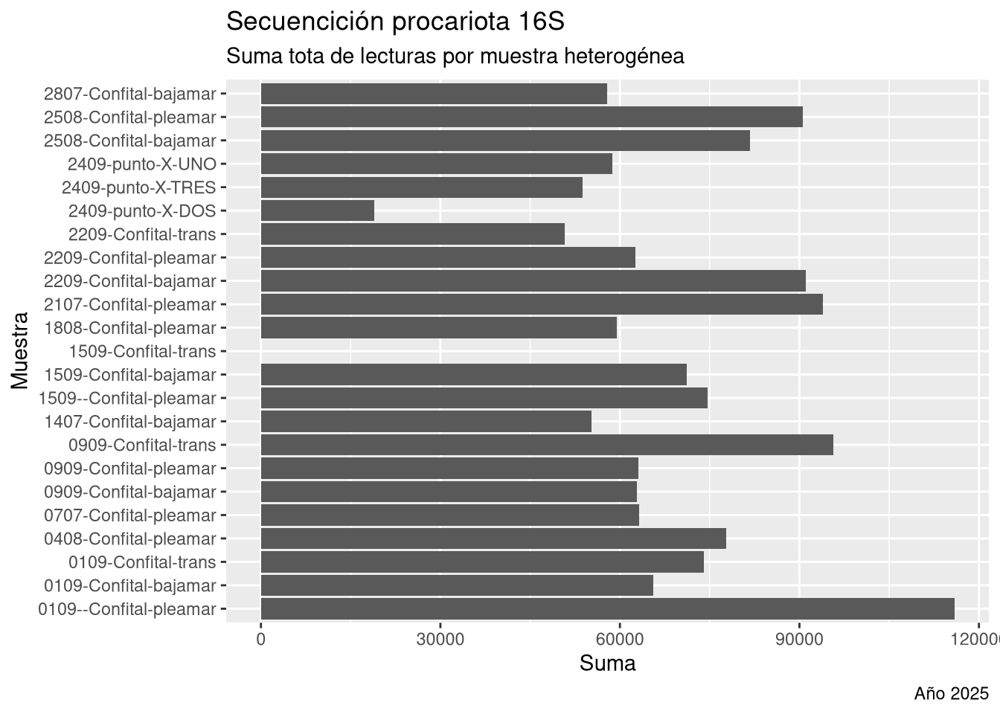
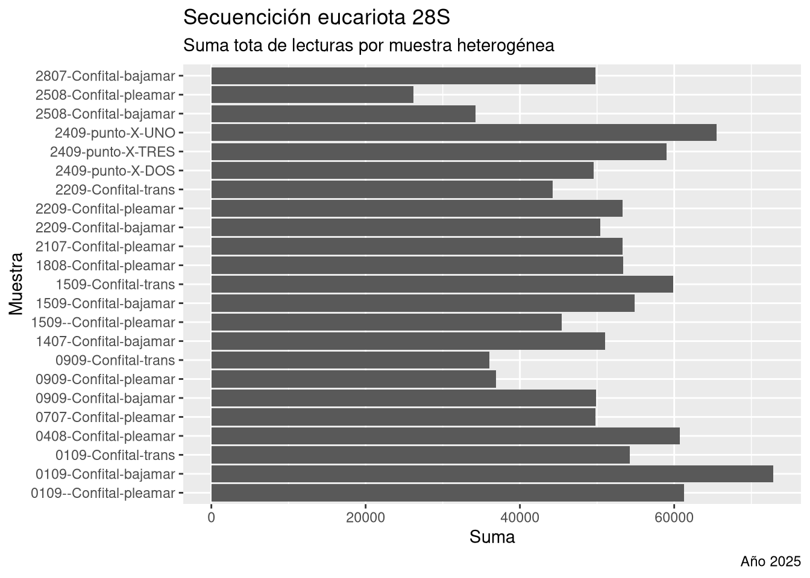
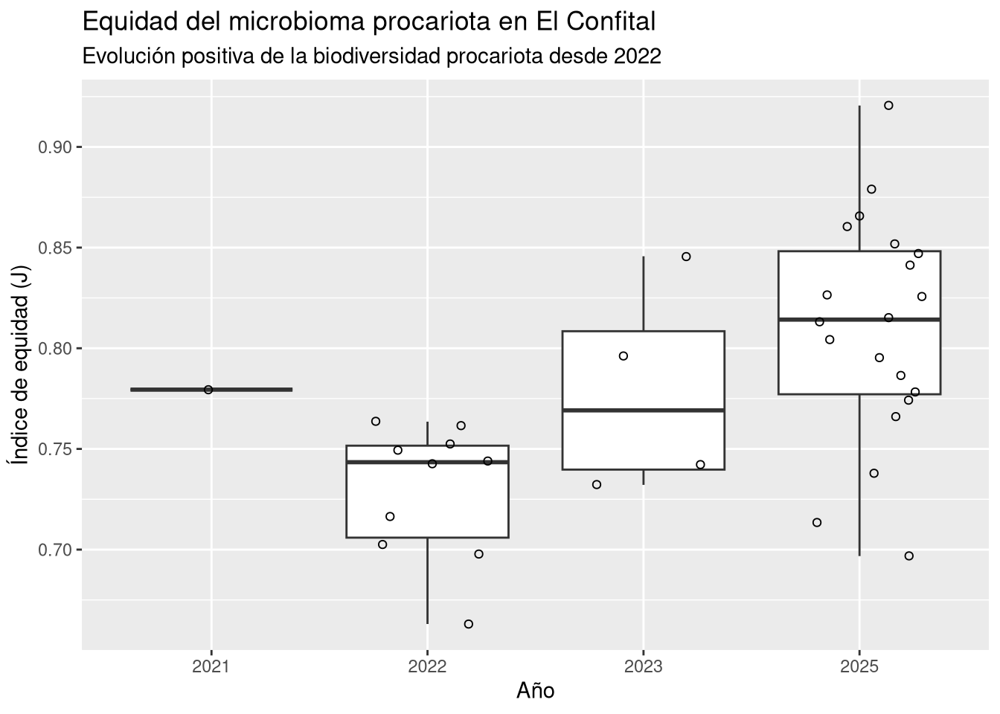
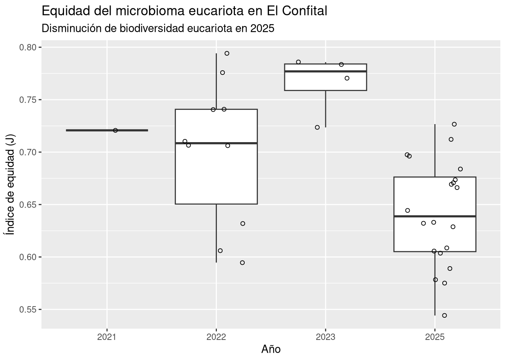
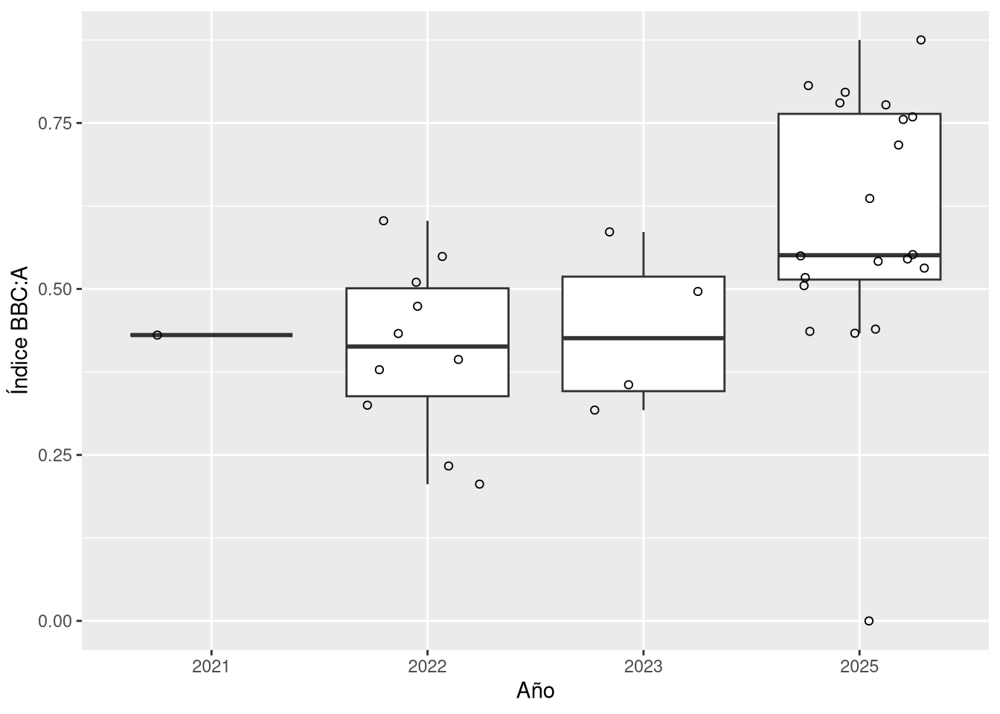
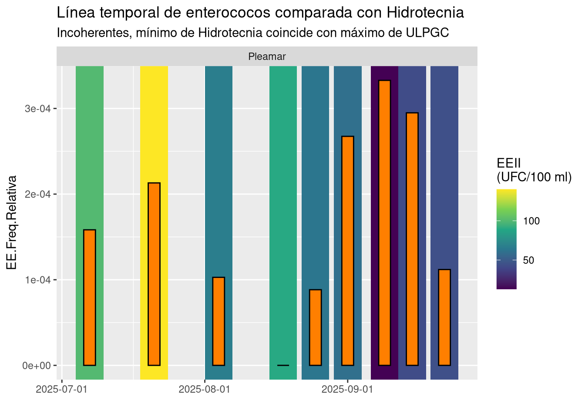
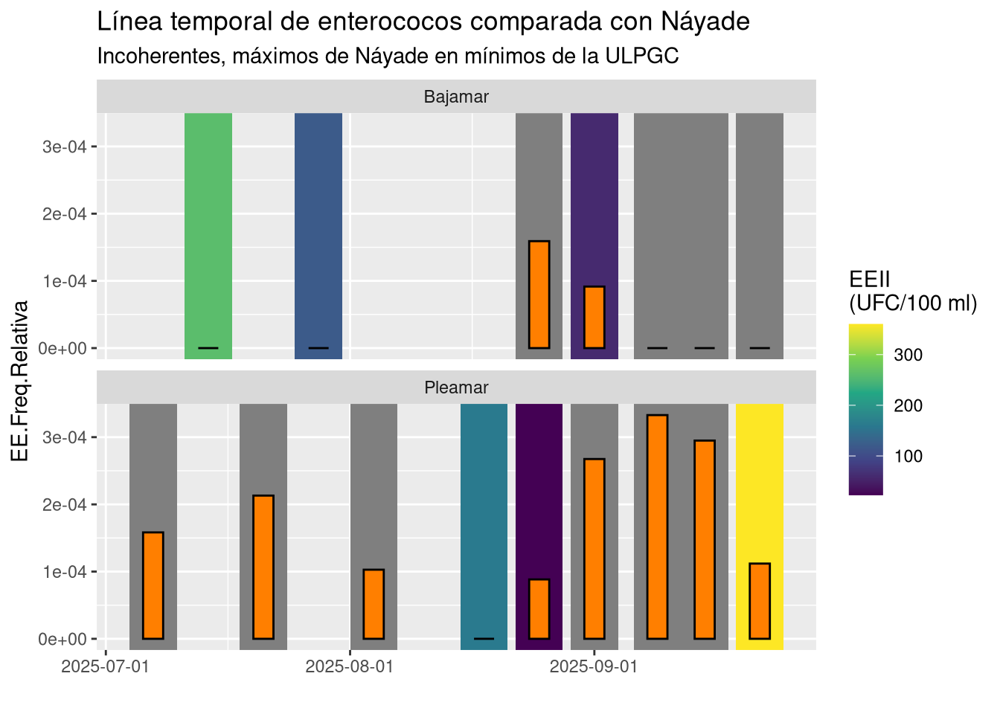

Secuenciación del microbioma
Identificación mediante ARNr 16S y 18S
Vera Gómez-Limón Gallardo ![]()
Vista general

Índices de biodiversidad
El índice de equidad (evenness en inglés) fue desarrollado por la ecóloga Evelyn Chrystalla Pielou1. Es una medida de la biodiversidad de cualquier ecosistema. En nuestro caso, mide la probabilidad de que dos lecturas de la misma muestra elegidas al azar sean de la misma variante (ASV).


Ratios microbianas
Siguiendo la anterior versión del proyecto2, analizamos las ratios bacteriales (también llamados «índices») que encontramos en la literatura científica en relación a la contaminación fecal del agua.
El estudio de Wu y colaboradores3 afirma que la ratio formado por las Clases Bacilli, Bacteroidia, Clostridia y Alpha (BBC:A) tiende a ser más elevado cuando exiten fuentes de contamianción fecal.

Género Enterococcus
Fueron 4 las ASV coincidentes dentro del Género Enterococcus (ASV.03284, ASV.11305, ASV.19065, ASV.02047), una de las variantes (ASV.19065) pudo ser identificada a nivel de la especie E. faecium. Como se observa en la Tabla 1, todas las muestras positivas pertenecen al periodo de 2025.
| Fecha | Lugar | ASV | Genus | Especie | Freq.Relativa |
|---|---|---|---|---|---|
| 2025-07-07 | Confital | ASV.03284 | Enterococcus | NA | 0.0001583 |
| 2025-07-21 | Confital | ASV.03284 | Enterococcus | NA | 0.0002131 |
| 2025-08-04 | Confital | ASV.03284 | Enterococcus | NA | 0.0001028 |
| 2025-08-25 | Confital | ASV.11305 | Enterococcus | NA | 0.0001591 |
| 2025-08-25 | Confital | ASV.03284 | Enterococcus | NA | 0.0000883 |
| 2025-09-01 | Confital | ASV.19065 | Enterococcus | faecium | 0.0000916 |
| 2025-09-01 | Confital | ASV.03284 | Enterococcus | NA | 0.0002674 |
| 2025-09-01 | Confital | ASV.02047 | Enterococcus | NA | 0.0000946 |
| 2025-09-09 | Confital | ASV.02047 | Enterococcus | NA | 0.0003328 |
| 2025-09-15 | Confital | ASV.02047 | Enterococcus | NA | 0.0002949 |
| 2025-09-22 | Confital | ASV.02047 | Enterococcus | NA | 0.0001119 |
| 2025-09-24 | Bco. Guiniguada | ASV.02047 | Enterococcus | NA | 0.0004833 |
| 2025-09-24 | Bco. Guiniguada | ASV.02047 | Enterococcus | NA | 0.0010553 |
No es posible equiparar numéricamente la frecuencia relativa de enterococos en una muestra de material genético con el tradicional conteo de colonias (UFC/100 ml). Sin embargo, sí es posible comparar los patrones temporales de ambas series para determinar si se tratan de medidas coherentes entre sí. En las siguientes figuras (Figura 6 y Figura 7), observamos en la escala de azules los datos de Hidrotecnia frente a las barras naranjas con la frecuencia relativa de Enterococcus en las muestras secuenciadas por la ULPGC.


Género Escherichia-Shigella (E. coli)
Una única ASV fue identificada (ASV.00789) correspondiente al género Escherichia-Shigella donde estaría clasificada la bacteria gastrointestinal humana Escherichia coli. Como mustra la Tabla 2, esta fue encontrada en las tres repeticiones de la muestra tomada en la desembocadura del Barranco Guiniguada.
| Fecha | Lugar | ASV | Genus | Especie | Freq.Relativa |
|---|---|---|---|---|---|
| 2021-07-27 | Playa Chica | ASV.00789 | Escherichia-Shigella | NA | 0.0002842 |
| 2023-01-24 | Confital | ASV.00789 | Escherichia-Shigella | NA | 0.0001017 |
| 2025-09-24 | Bco. Guiniguada | ASV.00789 | Escherichia-Shigella | NA | 0.0013745 |
| 2025-09-24 | Bco. Guiniguada | ASV.00789 | Escherichia-Shigella | NA | 0.0027326 |
| 2025-09-24 | Bco. Guiniguada | ASV.00789 | Escherichia-Shigella | NA | 0.0043064 |
Referencias
1.
E. C. Pielou. (2024). En Wikipedia, la enciclopedia libre. https://es.wikipedia.org/w/index.php?title=E._C._Pielou&oldid=163041786
2.
Gómez-Limón Gallardo, V. (2024). Canteras Microbiome. https://veraglg.github.io/bahiaconfital-old/
3.
Wu, C. H., Sercu, B., Werfhorst, L. C. V. D., Wong, J., DeSantis, T. Z., Brodie, E. L., Hazen, T. C., Holden, P. A., & Andersen, G. L. (2010). Characterization of Coastal Urban Watershed Bacterial Communities Leads to Alternative Community-Based Indicators. PLOS ONE, 5(6), e11285. https://doi.org/10.1371/journal.pone.0011285